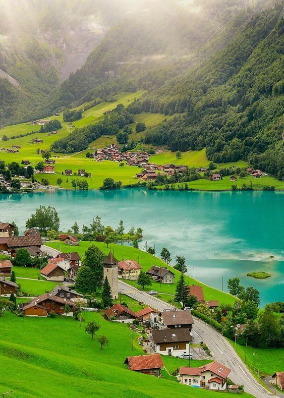

Turismo Familiar en Suiza
Suiza es un destino ideal para viajar en familia, ofreciendo una combinación perfecta de naturaleza, cultura y entretenimiento para todas las edades. Los niños pueden disfrutar de parques temáticos, museos interactivos y actividades al aire libre, mientras que los padres pueden relajarse en entornos seguros y bien organizados.
Destinos recomendados
- Parque Nacional Suizo: Una experiencia educativa y divertida para toda la familia con rutas de senderismo adaptadas y observación de fauna autóctona.
- Lucerna: Con su famoso puente de la Capilla y el Museo del Transporte Suizo, es una ciudad que encanta a grandes y pequeños.
- Jungfraujoch: La estación de tren más alta de Europa, donde se puede disfrutar de nieve y vistas espectaculares durante todo el año.
- Zurich Zoo: Un lugar perfecto para que los niños aprendan sobre animales en un ambiente controlado y divertido.
Actividades para niños
Suiza cuenta con numerosas actividades para mantener entretenidos a los más pequeños, como paseos en trenes panorámicos, talleres de artesanía local y visitas a granjas educativas. Además, muchas estaciones de esquí ofrecen escuelas para niños y áreas especialmente diseñadas para ellos.
Consejos para viajar en familia
- Planifica rutas cortas y actividades que permitan descansos frecuentes para los niños.
- Reserva alojamiento familiar con comodidades como cocina y espacios de juego.
- Consulta la previsión meteorológica y lleva ropa adecuada para todas las condiciones climáticas.
- Aprovecha el eficiente transporte público suizo para desplazarte cómodamente.